Daisy chain sharing on V6000 Active Matrix
Tomoaki Kobayashi, Chi Yuan, Verigy
Paper-ID: 12458 April 2010
Abstract
Driver sharing is an effective way of increasing DUT parallelism and reducing cost of test. However on the high speed application like DDR3 package test, it is not easy to satisfy in both parallelism and signal integrity. By using daisy chain sharing topology with the impedance controlled transmission line, the signal integrity can be maintained. But it also requires to adjust the drive signal edge timing and the receive strobe timing properly.
This paper describes the method of the daisy chain sharing on V6000 test system, which has state of the art Active Matrix (Active Programmable Interface Matrix), including the load board design, the driver/receiver timing adjustment, the real waveform, and the real device test results.
Key Words: memory test, multisite, driver sharing, DRAM, final test
Introduction
Reducing test cost is a challenging issue always in test engineering, while keeping or improving testing quality at the same time. To address both conflicting aspects, one of the conventional methods effectively reducing the test cost is driver sharing, which is popular in both wafer and package testing. The driver sharing can simply increase the parallelism without sacrificing the test coverage and quality, and it does not require additional design for test inside the device.
The number of the sharing is expanded to 4, 6 or even 8 in wafer testing, because the lower test frequency and the shorter stub length in the probe card design makes it possible. However in package testing, with DRAM's ever increasing interface speed, it is not easy to scale the number of the sharing, and it remains to 2 sharing generally.
Daisy chain sharing is a method of increasing the number of sharing to 4 or 8 while keeping the quality of the test signal to the high frequency range into >500Gbps. But test system needs to have flexibility in timing to support the independent operation timing of each DUT sequentially lined up on the shared transmission line.
In this paper, the method to adjust the driver and strobe timing to implement by 4 daisy chain driver sharing on V6000 Active Matrix is described, with the scope waveform and the shmoo results presented. It effectively reduces the test cost by expanding the parallelism up to 1024 DUT for x8bit DDR3 final test on V6000FT system.
Driver sharing
There are various types of topology in the driver sharing, but the typical three topologies, Y2, Y4, and Daisy chain by4 as shown in Figure 2-1, are considered in this section.
Y2 is a most general topology and it can keep the signal integrity by designing the signal transmission line as splitting single 50-ohm line into two 100-ohm lines. Y2 can cut the number of tester driver channels in half, and there is no special timing adjustment required by designing the Y2 pair lines in equal length. The signal swing level is the same as the driver level.
Y4 is a simple manner to increase the share count to 4, and it can cut the number of tester driver channels in 1/4. Theoretically it is expected to have another two 200-ohm Y split lines on the first Y end, for the impedance matching. However having stable 200-ohm line is generally not possible in the DUT board design and manufacturing, and also the higher impedance like 200-ohm will enlarge the signal deterioration by the effect of the device pin input capacitance. So practically, another two spitted lines are designed in 100-ohm impedance instead of 200-ohm. The last 100-ohm line length should be short enough to avoid the effect in reflection. Y4 is possible but the signal quality is not so good to support higher speed. The signal swing level is the same as the driver level.
Daisy chain sharing is a topology for improving the signal quality while increasing the sharing number to 4 or or even more. The 50-ohm signal impedance is kept and terminated on the DUT board. It is a simple transmission line theoretically and the signal integrity can be kept in higher frequency range. It even enables the driver sharing on the timing critical clock signal. Special considerations must be taken since the driver signal swing is reduced, and the timing on the non-shared signals has to be adjusted to align with the shared ones.
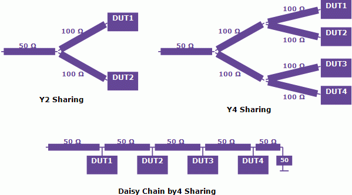
Figure 2-1. Sharing Topologies
Figure 2-2 shows the consideration of the number of the tester channel (assuming all IO channel here) required per DUT for each sharing topology, Y2, Y4, and Daisy chain by4 (D4). In summary, it is;
- D2 share: 26 ch/DUT
- Y4 share: 19.5 ch/DUT
- D4 share: 18 ch/DUT
The difference of the Y4 and D4 comes from the clock sharing. The D4 enables the clock signals (CK, /CK) sharing, and it reduces the number of channels required per DUT efficiently, which directly impacts the maximum parallelism on the V6000FT configuration. The parallelism on the V6000FT 32TSM system is listed as follows. Only D4 enables 1024 DUT/system test and it contributes the CoT reduction greatly.
- Y2 share: 512 DUT/system (to 640 DUT/system)
- Y4 share: 512 DUT/system (to 768 DUT/system)
- D4 share: 1024 DUT/system
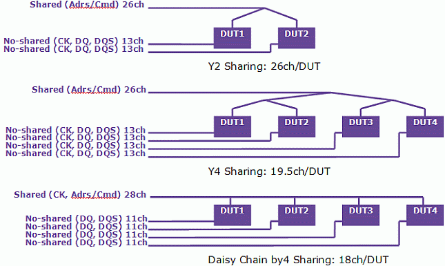
Figure 2-2. Tester Channel Count for Each Sharing Topology
V6000 Active Matrix
Active Matrix (Active Programmable Interface Matrix) as shown in Figure 3-1 is one of the outstanding feature on V6000 to realize lowest CoT on the various types of applications. It expands the channel counts by a factor of four, and gains advantages in cost per channel, signal fidelity, and short round trip delay from tester channel to device.
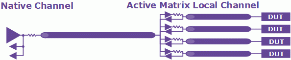
Figure 3-1. V6000 Active Matrix
It is well designed to cover all the production test requirements on wafer and package test. Although Active Matrix sub channels share one native channel from above diagram, it has drive timing duplicated on each sub channels, but it does allow some reasonable amount flexibility in strobe timing independent between the Active Matrix local channels. For the high parallelism testing for memory, it is a good engineering balance between cost and flexibility. We should be aware of this amount of flexibility and implement smart interface design technique in the daisy chain sharing.
These flexibilities are illustrated as in Figure 3-2,
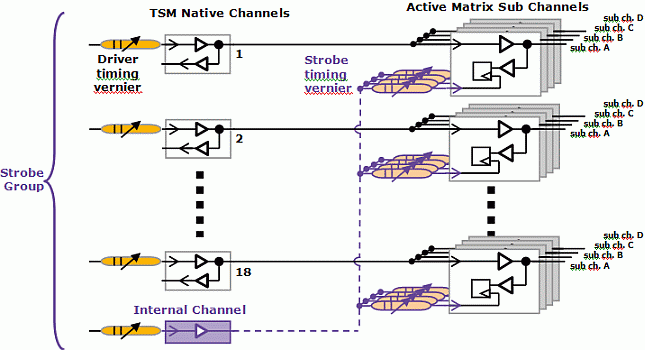
Figure 3-2. V6000 channel fine timing adjustment flexibility
Active Matrix local sub channels are all IO channel, and it has rather complicated structure on the receiver side (for device output) compare to the driver side (for device input). Each Active Matrix receiver has signal latch per pin and the strobe timings are provided though internal control mechanism per 18ch group (called strobe group) which gives us reasonable independent adjustment capability between channels, even sub-channels fan out from the same native channels.
Driver has rather straightforward structure and the large timing adjustment are on the native channel, while Active Matrix channel driver does not have independent timing adjustment and the timing are associated with the native channel timing.
By utilizing those timing flexibilities fully in timing setting and DUT board design, a robust daisy chain implementation can be obtained.
Daisy Chain Driver Sharing Implementation on Active Matrix
To apply the daisy chain sharing for DDR3 on V6000, following items should be considered.
- driver timing adjustment range (for clock, address/command, DQ/DQS)
- receiver timing adjustment range (for DQ/DQS)
- strobe group
- DUT board design in DUT layout and signal pattern propagation delay
One of the solutions of by4 daisy chain sharing of DDR3 final test on V6000 Active Matrix is shown in Figure 4-1. For simplicity, all the shared line pattern length interval between the DUT1 and 2, 2 and 3, 3 and 4 are designed as the same length Linterval, which results in the same electrical timing delay Tinterval.
Because of the V6000 Active Matrix architecture, it makes sense to consider the pin assignment and DUT board design strategy first from the receiver side.
- Assign the DQ channels of DUT1 and DUT2 to use a common strobe timing group, and DUT3 and DUT4 to use another strobe timing group. Also assign the DQS channels of DUT1 and DUT2 to use a common strobe timing group, and DUT3 and DUT4 to use another strobe timing group. Total 4 strobe timing groups on a CRM2 can enable this assignment.
- There is an operation timing delta caused by Linterval between DUT1 and DUT2, which is associated with the CK/Adrs/Cmd driver sharing signal path. The time delta can be compensated by the DUT board design, so that the DUT2 DQ/DQS signal trace length is adjusted to L1 - Linterval, whereas DUT1 DQ/DQS signal trace length is kept to L1. This helps to align the DUT1 and DUT2's DQ/DQS output signal timing at the Active Matrix sub channels. The minor timing difference can be adjusted by using the fine timing vernier on each sub channel. The same scheme can be applied on DUT3 and DUT4.
Next, driver timing is considered.
- Since DUT2 is running with the delay Tinterval after DUT1, the DQ/DQS signal drive timing must be delayed by Tinterval. In addition, the DQ/DQS signal trace length is short in Tinterval, which implies further delay. These two Tinterval delay can be compensated by shifting DQ/DQS drive timing of DUT2 to 2 x Tinterval
- Since DUT3 is running with the delay of 2 x Tinterval in reference to DUT1, and the DQ/DQS signal trace length is the same as the DUT1, which does not make any further delay, the DQ/DQS timing of DUT3 can be compensated by shifting it to 2 x Tinterval.
- Since DUT4 is running with the delay of 3 x Tinterval in reference to DUT1, and also the DQ/DQS pattern length is short by Tinterval, which implies further delay. So total 4 x Tinterval is the timing compensation we need on the DQ/DQS for DUT4.
Figure 4-2 illustrates these timing conditions of DUT1 to DUT4. Vertical axis implies the time and distance on board, horizontal axis shows time. It shows the strobe timing of DUT1 and DUT2 is set to the delay of T1, and the strobe timing of DUT3 and DUT4 is set to the delay of T1 + 2 x Tinterval.
Figure 4-3 shows the strategy of the DUT board pattern length design based on these considerations.
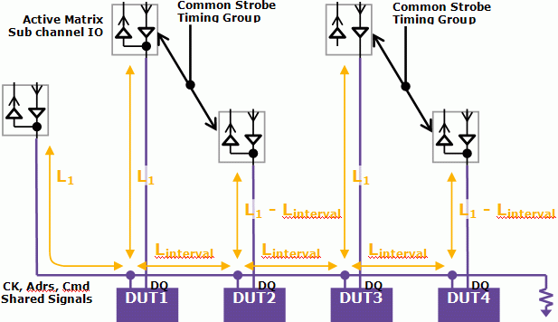
Figure 4-1. Implementation of by4 Daisy chain sharing for DDR3 final test
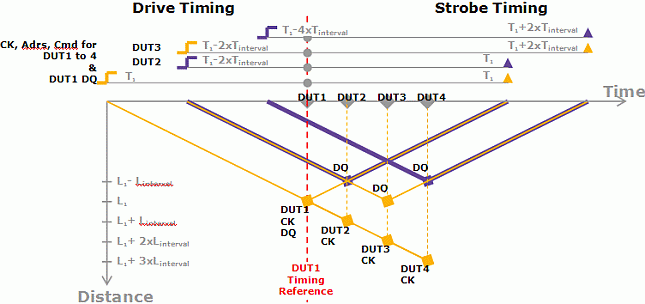
Figure 4-2. Timing condition for DUT1 to 4
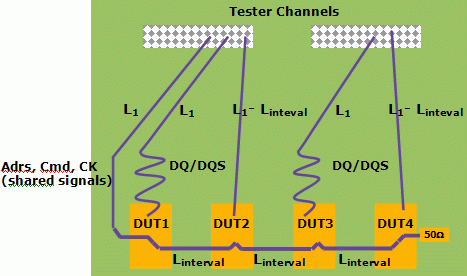
Figure 4-3. DUT board design strategy
Results
We made the benchmark DUT board as shown in Figure 5-1 with the design strategy described in the previous sections. This is a board designed for V6000e, which is a compact engineering system containing all V6000 HW components including Active Matrix.
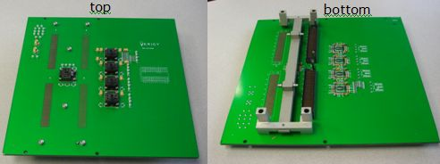
Figure 5-1. DUT Board
Figure 5-2 shows the result of the scope measurement on the shared signal lines, CK and Address in 560Mbps/600mV. Figure 5-3 and 5-4 shows the other frequency point, 800Mbps and 1120Mbps, respectively. Active Matrix driver can keep enough signal integrity on the by4 daisy shared lines.
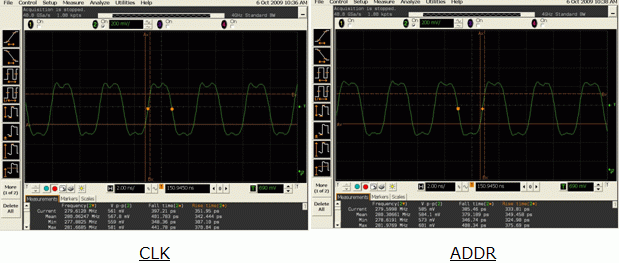
Figure 5-2. 560Mbps/600mV Scope Measurement on CLK/ADDR
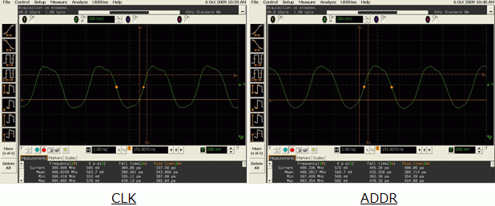
Figure 5-3. 800Mbps/600mV Scope Measurement on CLK/ADDR
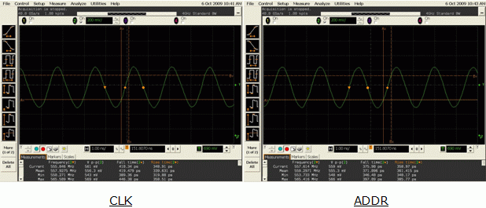
Figure 5-4. 1120Mbps/600mV Scope Measurement on CLK/ADDR
The real test result with DD3 devices are taken and Figure 5-5 shows one of the typical performance results we could confirm on the DQ output eye shmoo. The data rate is 1120Mbps here. The shmoo shows the overlay of DQ and DQS, and "*" implies DQS pass & DQ pass, "s" implies DQS pass & DQ fail, and "d" implies DQS fail & DQ pass.
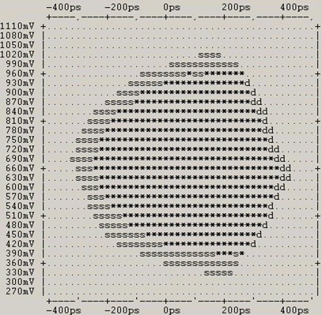
Figure 5-5. 1120Mbps DQ out - tACC Shmoo
Conclusion
The implementation strategy of the daisy chain sharing on V6000 Active Matrix and the test result are described. By considering the character and the timing flexibility on Active Matrix, we can have higher number of driver sharing while keeping Active Matrix's high speed performance. This drastically increases the parallelism up to 1024 DUT which attained test quality goal with low test cost.